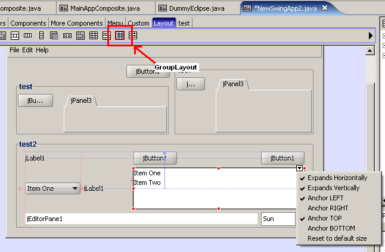

What's new in Jigloo version 3.9.0
Supports GroupLayout (as in Netbean's Matisse)
You should include the swing-layout-1.0.jar file that you will find in the jigloo plugin folder in your project class path.
To use:
- Select the new "GroupLayout" icon
(it has a red border) from the component/layout palette and drop it on
your form, then start adding/moving components.
- You can also start with an existing GUI and when you set the layout to "Group" then it will automatically be converted!
- Drag and drop elements from the component palette (or cut, copy/paste) - alignment lines will appear
- Use the pop-up menu
(opened by clicking on the "down-arrow" icon at the top-right of the
selected element) to change anchors, alignment and reset the element to
it's default size.
